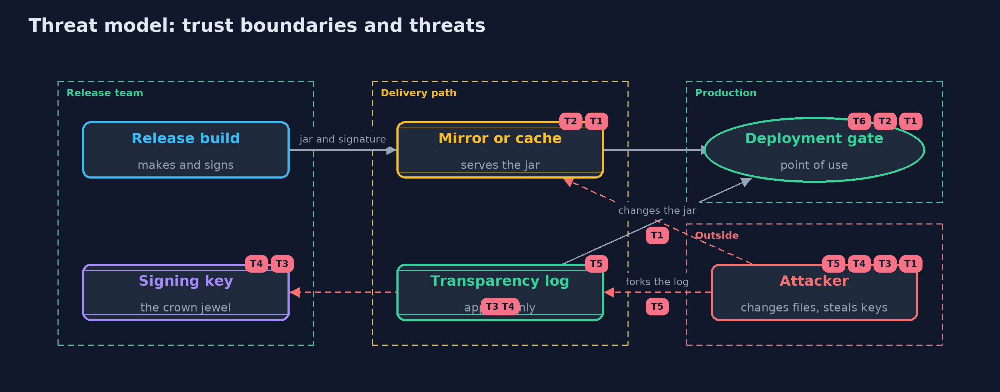

Threat Model — Artifact Signing: Signed Releases, Key Rotation and Transparency Logs
A threat model answers four questions: what are we protecting, who or what could harm it, how, and what do we do about it. This one covers this project's own demo system, not a production deployment. Domain: an online store.
Scope
How an online store's release jar gets from its build to production: signing a release statement, trusting and rotating signing keys, a transparency log of signatures, and the deployment gate. It does not cover the build's own integrity, dependency risks, or the hardware module that should hold the keys.
What we protect (assets)
- The release jar that runs in production.
- The signing keys, and the key ring that deployments trust.
- The transparency log and its signed heads.
- The record of releases the store really made.
Who and what acts on the system
- The release team, who build and sign releases.
- Anyone who can change files on mirrors, caches or build servers.
- A thief or an insider holding a signing key.
- A dishonest or compromised log operator.
Trust boundaries
A trust boundary is a line that data or a request crosses between parts that trust each other differently. Threats cluster where those lines are.
- Release build to the delivery path: the jar leaves the release team's control.
- Delivery path to the deployment gate: nothing is trusted until verified.
- Signing key to everything else: whoever holds it can vouch for anything.

Each dashed box is a trust boundary. A rose tag such as T1 shows where the threat of that number, in the table below, applies.
Threats, using STRIDE
STRIDE is a checklist of six kinds of threat: Spoofing (S), Tampering (T), Repudiation (R), Information disclosure (I), Denial of service (D), Elevation of privilege (E).
| Id | Kind | Threat | Where it shows up | Control in this project | What is left |
|---|---|---|---|---|---|
| T1 | Tampering | The jar is changed on a mirror, a cache or a build server | Verifier.verify |
A signed statement over the SHA-256 of the exact bytes, compared in constant time before anything runs | A path to production that skips the gate runs unchecked |
| T2 | Spoofing | A forged statement or key claims to be the store's | Verifier.verify, KeyRing |
Keys are pinned by id and channel; the signature must verify under the pinned public key | The pinned keys themselves must reach every deployment through a trusted channel |
| T3 | Elevation of privilege | A stolen or misused signing key signs a release the store never made | the signing key | Signatures must be in the public log, and the store's monitor reports releases it did not make | Between the signing and the monitor's alert, a deployment that trusts the log may run the release; keep keys in hardware |
| T4 | Repudiation | A stolen key backdates its signature to before the revocation | KeyRing.revoke, DeployGate.checkWithLog |
Revocation is judged by the day the log recorded the signature, not the day the signer wrote | Without a log, a backdated signature passes, so verifiers that skip the log stay exposed |
| T5 | Tampering | The log operator shows different histories to different readers | TransparencyLog |
Signed heads, consistency proofs, and comparing heads: two heads of one size with different roots prove a fork | Readers must actually exchange heads; a reader who never compares cannot see a fork |
| T6 | Denial of service | A deployment cannot verify because a key was revoked before it learned the new one | KeyRing |
Rotation with an overlap in which both keys are trusted | Deployments that are not updated during the overlap stop accepting releases |
Assumptions
- The deployment's pinned keys and the log's key were installed through a trusted channel.
- The gate is on every path to production.
- In the demo, keys come from fixed demo seeds and days are numbers.
Out of scope
- Build provenance and SBOMs: the sbom-and-provenance project.
- Container images and keyless signing: the -with-cosign version.
- Rollback to an older signed release: an exercise.
How the tests check this
Ed25519Testchecks RFC 8032 test 1 and determinism.MerkleTreeTestchecks known values and every inclusion and consistency proof up to seventeen entries, with wrong indexes and rewritten histories refused.VerifierTestchecks the canonical statement, every refusal and its reason, channels, rotation and revocation.LogAndGateTestchecks the gate with and without a log entry, revocation by the log's day, signed heads, the monitor and a forked log.DemoRunsTestcompares the whole demo with the golden output.
Where this model goes next
The next project, sbom-and-provenance, records what went into the build and how it was made, so a signature vouches not only for the bytes but for their origin.